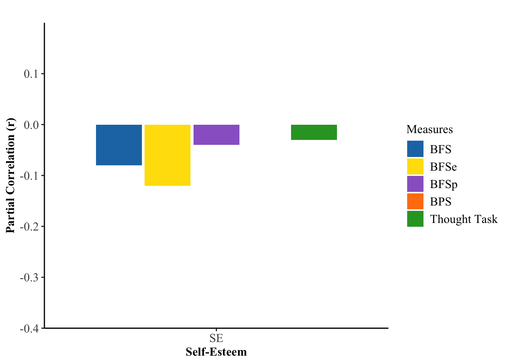
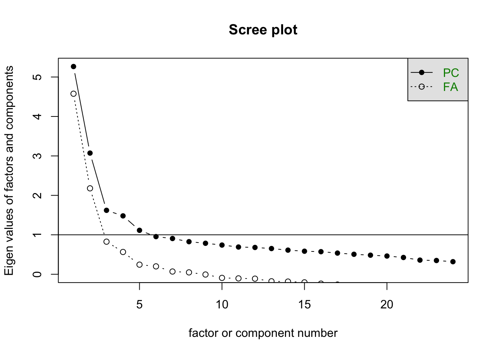
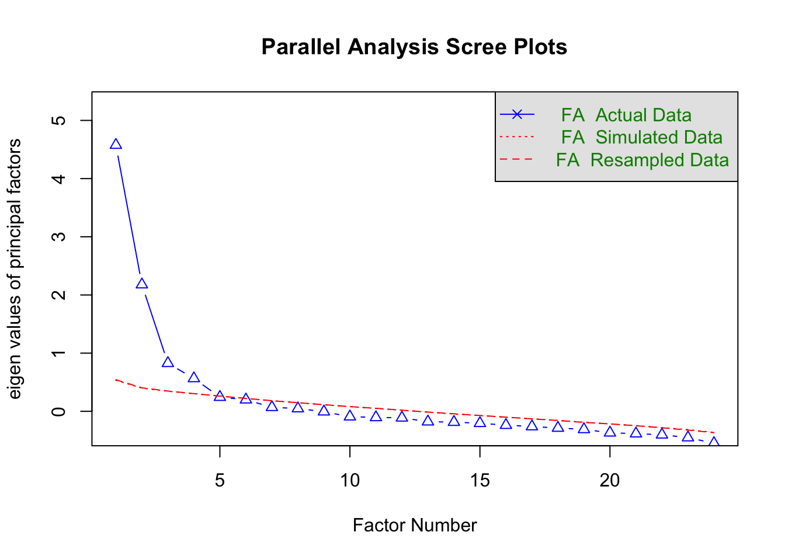
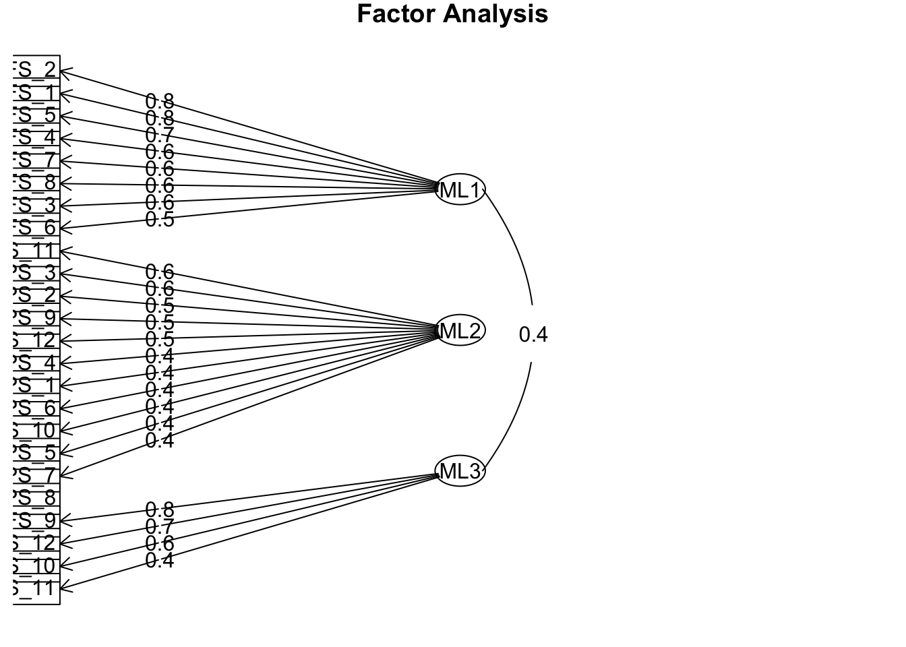
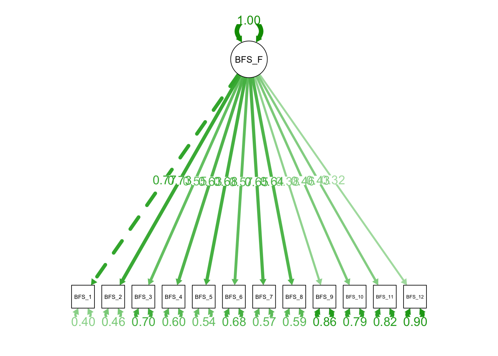
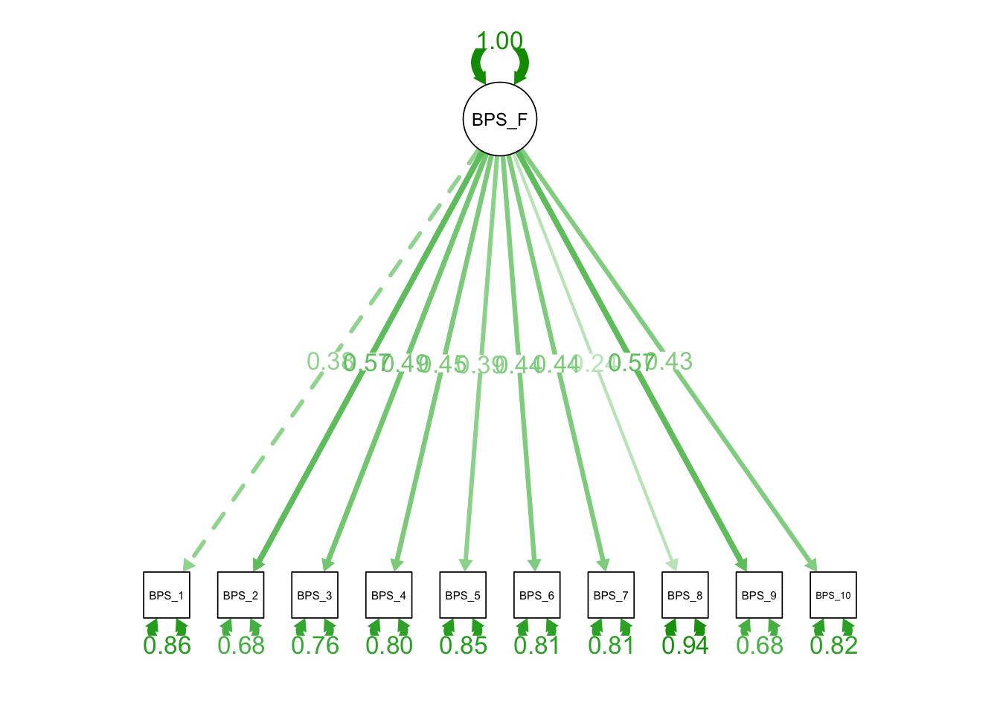
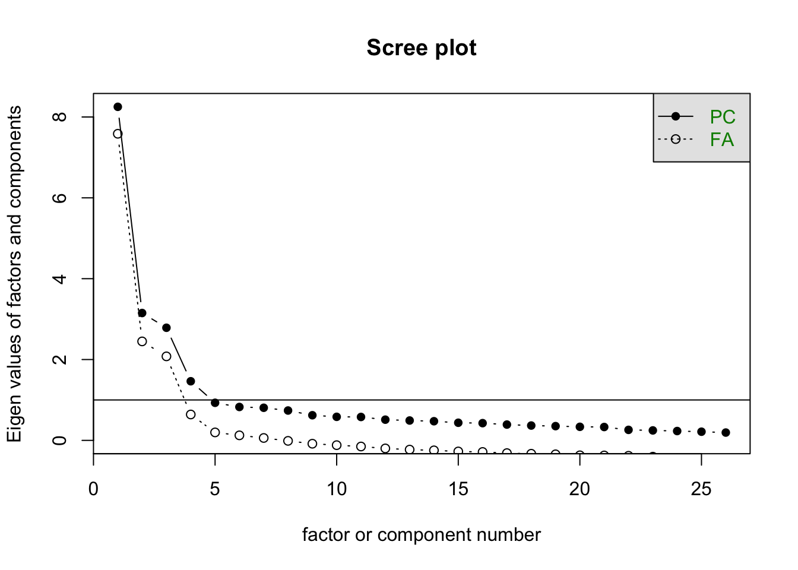
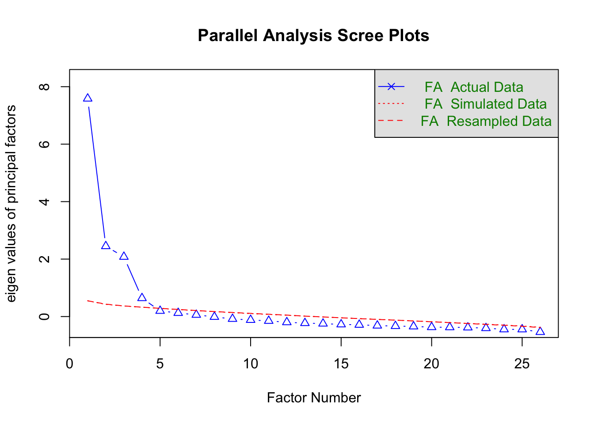
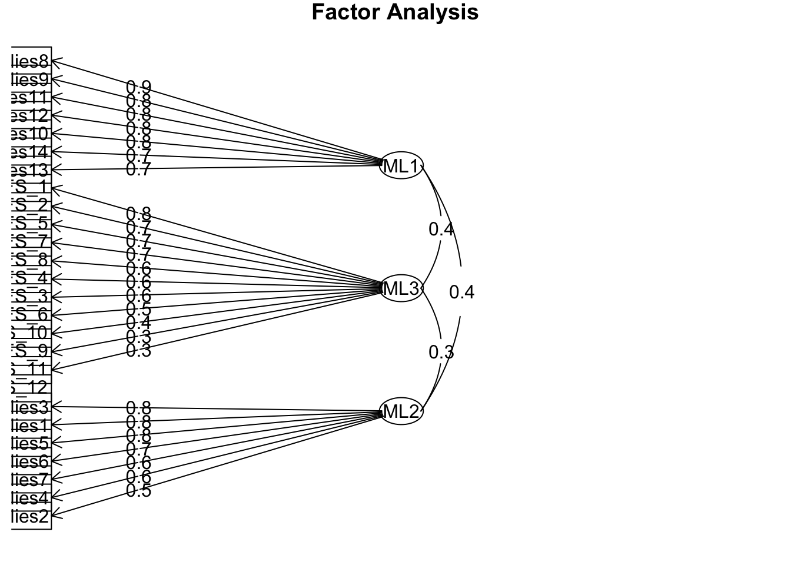
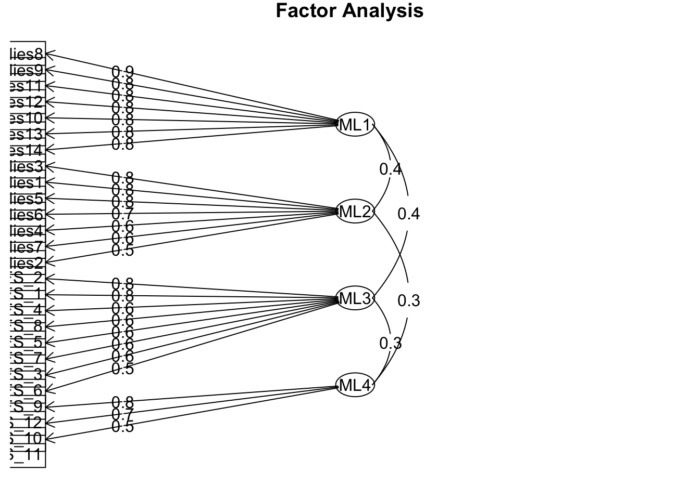

Thesis data Visualization Analyses
Allison Li
04252025
For this portfolio, I will continue to use the dataset from my thesis study. This portfolio will focus on creating visualization for my main statistical analysis. I would like to compare how each individual differences is differently or similarly correlated with one of the three bullshitting measures. Additionally, I applied the EFA and CFA just to see how Bullshitting Frequency scale and Bullshitting Propensity scale has loaded on either one or more factors.
##Do I do moderation test? such as gender?
library(ggsignif)
library(tibble)
library(ggplot2)
library(psych)##
## Attaching package: 'psych'## The following objects are masked from 'package:ggplot2':
##
## %+%, alphalibrary(ltm)## Loading required package: MASS## Loading required package: msm## Loading required package: polycor##
## Attaching package: 'polycor'## The following object is masked from 'package:psych':
##
## polyserial##
## Attaching package: 'ltm'## The following object is masked from 'package:psych':
##
## factor.scoreslibrary(tidyverse)## ── Attaching core tidyverse packages ──────────────────────── tidyverse 2.0.0 ──
## ✔ dplyr 1.1.4 ✔ readr 2.1.5
## ✔ forcats 1.0.0 ✔ stringr 1.5.1
## ✔ lubridate 1.9.4 ✔ tidyr 1.3.1
## ✔ purrr 1.0.4## ── Conflicts ────────────────────────────────────────── tidyverse_conflicts() ──
## ✖ psych::%+%() masks ggplot2::%+%()
## ✖ psych::alpha() masks ggplot2::alpha()
## ✖ dplyr::filter() masks stats::filter()
## ✖ dplyr::lag() masks stats::lag()
## ✖ dplyr::select() masks MASS::select()
## ℹ Use the conflicted package (<http://conflicted.r-lib.org/>) to force all conflicts to become errorslibrary(ppcor)
Thesis_scale <- readRDS("Thesis_scale.rds")Graphs for the partial correlations when controling for lying
# Sample data: Replace these values with your actual correlation values
dark <- data.frame(
Trait = rep(c("MACH-short", "NARC-short", "PSYC-short", "MPI", "HSNS", "NPI", "LSRP", "LSRP-prim","LSRP-sec"), each = 3),
Measures = rep(c("BFS", "BPS", "Thought Task"), times = 9),
Correlation = c(0.24, 0.11, 0.09, # Machiavellianism correlations
0.15, 0.08, 0.01, # Narcissism correlations
0.14, 0.18, 0.01, # Psychopathy correlations
.26, .18, .11, #MPI
.25, .07, .10, #HSNS
.15, .18, .01, #NPI
.18, .26, .06, #LSRP
.17, .21, .05,
.15, .25, .04
)
)
dark$Trait <- factor(dark$Trait, levels = c(
"MACH-short", "MPI", "NARC-short", "HSNS", "NPI", "PSYC-short", "LSRP", "LSRP-prim","LSRP-sec"
))
plot <- ggplot(dark, aes(x = Trait, y = Correlation, fill = Measures)) +
geom_bar(stat = "identity", position = position_dodge(width = 0.85), width = 0.8) +
scale_fill_manual(values = c("BFS" = "#1f77b4", "BPS" = "#ff7f0e", "Thought Task" = "#2ca02c")) +
theme_classic(base_size = 12) + # Set the base font size to 12
theme(
text = element_text(family = "Times New Roman"), # Use Times New Roman for all text
plot.title = element_text(size = 12, face = "bold", hjust = 0.5),
axis.title = element_text(size = 12, face = "bold", hjust = 0.5),
axis.text = element_text(size = 12),
legend.title = element_text(size = 12),
legend.text = element_text(size = 12)
) +
labs(
title = " ",
x = "Dark Triad Traits",
y = "Partial Correlation (r)",
fill = "Measures"
) +
scale_y_continuous(limits = c(0, 0.40), expand = c(0, 0))
# Display the plot
print(plot)
#Sample data: Replace these values with your actual correlation values
hexaco <- data.frame(
othertrait = rep(c("HON", "EMO", "EXTRA", "AGRE", "CONS", "OPEN", "NCOG", "NCLS"), each = 3),
Measures = rep(c("BFS", "BPS", "Thought Task"), times = 8),
Correlation = c(-.24, -.16, -.10,
.10, -.08, .04,
.01, .07, .03,
-.13, -.03, -.03,
-.17, -.29, -.02,
-.03, -.18, -.08,
-.02, -.30, -.13,
.04, -.15, -.05)
)
hexaco$othertrait <- factor(hexaco$othertrait, levels = c(
"HON", "EMO", "EXTRA", "AGRE", "CONS", "OPEN", "NCOG", "NCLS"
))
plot <- ggplot(hexaco, aes(x = othertrait, y = Correlation, fill = Measures)) +
geom_bar(stat = "identity", position = position_dodge(width = 0.85), width = 0.8) +
scale_fill_manual(values = c("BFS" = "#1f77b4", "BPS" = "#ff7f0e", "Thought Task" = "#2ca02c")) +
theme_classic(base_size = 12) + # Set the base font size to 12
theme(
text = element_text(family = "Times New Roman"), # Use Times New Roman for all text
plot.title = element_text(size = 12, face = "bold", hjust = 0.5),
axis.title = element_text(size = 12, face = "bold", hjust = 0.5),
axis.text = element_text(size = 12),
legend.title = element_text(size = 12),
legend.text = element_text(size = 12)
) +
labs(
title = " ",
x = "Other Personality Traits",
y = "Partial Correlation (r)",
fill = "Measures"
) +
scale_y_continuous(limits = c(-.40, 0.40), expand = c(0, 0))
# Display the plot
print(plot)
cogability <- data.frame(
cogab = rep(c("WORD", "NS", "CRT"), each = 3),
Measures = rep(c("BFS", "BPS", "Thought Task"), times = 3),
Correlation = c(-.00, -.12, .01,
-.10, -.07, -.06,
-.11, -.08, -.07)
)
cogability$cogab <- factor(cogability$cogab, levels = c(
"WORD", "NS", "CRT"
))
plot_cog <- ggplot(cogability, aes(x = cogab, y = Correlation, fill = Measures)) +
geom_bar(stat = "identity", position = position_dodge(width = 0.85), width = 0.8) +
scale_fill_manual(values = c("BFS" = "#1f77b4", "BPS" = "#ff7f0e", "Thought Task" = "#2ca02c")) +
theme_classic(base_size = 12) + # Set the base font size to 12
theme(
text = element_text(family = "Times New Roman"), # Use Times New Roman for all text
plot.title = element_text(size = 12, face = "bold", hjust = 0.5),
axis.title = element_text(size = 12, face = "bold", hjust = 0.5),
axis.text = element_text(size = 12),
legend.title = element_text(size = 12),
legend.text = element_text(size = 12)
) +
labs(
title = " ",
x = "Cognitive Ability",
y = "Partial Correlation (r)",
fill = "Measures"
) +
scale_y_continuous(limits = c(-.40, 0.10), expand = c(0, 0))
# Display the plot
print(plot_cog)
thinkstyles <- data.frame(
thinkst = rep(c("ACT", "PIT", "PET", "CMT", "AOT", "FI"), each = 3),
Measures = rep(c("BFS", "BPS", "Thought Task"), times = 6),
Correlation = c(-.14, -.37, -.06,
.16, .18, -.04,
-.10, -.34, -.06,
.09, .13, -.06,
-.23, -.34, -.03,
.14, .00, -.03)
)
thinkstyles$thinkst <- factor(thinkstyles$thinkst, levels = c(
"ACT", "PIT", "PET", "CMT", "AOT", "FI"
))
plot_style <- ggplot(thinkstyles, aes(x = thinkst, y = Correlation, fill = Measures)) +
geom_bar(stat = "identity", position = position_dodge(width = 0.85), width = 0.8) +
scale_fill_manual(values = c("BFS" = "#1f77b4", "BPS" = "#ff7f0e", "Thought Task" = "#2ca02c")) +
theme_classic(base_size = 12) + # Set the base font size to 12
theme(
text = element_text(family = "Times New Roman"), # Use Times New Roman for all text
plot.title = element_text(size = 12, face = "bold", hjust = 0.5),
axis.title = element_text(size = 12, face = "bold", hjust = 0.5),
axis.text = element_text(size = 12),
legend.title = element_text(size = 12),
legend.text = element_text(size = 12)
) +
labs(
title = " ",
x = "Thinking Styles",
y = "Partial Correlation (r)",
fill = "Measures"
) +
scale_y_continuous(limits = c(-.40, 0.40), expand = c(0, 0))
# Display the plot
print(plot_style)
selfesteem <- data.frame(
selfes = rep(c("SE"), each = 5),
Measures = rep(c("BFSe", "BFSp", "BFS", "BPS", "Thought Task"), times = 1),
Correlation = c(-.12, -.04, -.08, -.00, -.03)
)
plot_style <- ggplot(selfesteem, aes(x = selfes, y = Correlation, fill = Measures)) +
geom_bar(stat = "identity", position = position_dodge(width = 0.85), width = 0.8) +
scale_fill_manual(values = c("BFS" = "#1f77b4", "BPS" = "#ff7f0e", "Thought Task" = "#2ca02c", "BFSe" = "#FEDF05", "BFSp" = "#9966cc")) +
theme_classic(base_size = 12) + # Set the base font size to 12
theme(
text = element_text(family = "Times New Roman"), # Use Times New Roman for all text
plot.title = element_text(size = 12, face = "bold", hjust = 0.5),
axis.title = element_text(size = 12, face = "bold", hjust = 0.5),
axis.text = element_text(size = 12),
legend.title = element_text(size = 12),
legend.text = element_text(size = 12)
) +
labs(
title = " ",
x = "Self-Esteem",
y = "Partial Correlation (r)",
fill = "Measures"
) +
scale_y_continuous(limits = c(-.40, 0.20), expand = c(0, 0))
# Display the plot
print(plot_style)
EFA and CFA for the scales of bullshitting propensity
##install.packages("lavaan")
##install.packages("semPlot")
## I wanted to see if these two scales might be measuring the same underlying construct first.
library(lavaan)## This is lavaan 0.6-19
## lavaan is FREE software! Please report any bugs.##
## Attaching package: 'lavaan'## The following object is masked from 'package:psych':
##
## cor2covlibrary(semPlot)
one_factor_model <- '
General_Factor =~ BFS_1 + BFS_2 + BFS_3 + BFS_4 + BFS_5 + BFS_6 + BFS_7 + BFS_8 + BFS_9 + BFS_10 + BFS_11 + BFS_12 + BPS_1 + BPS_2 + BPS_3 + BPS_4 + BPS_5 + BPS_6 + BPS_7 + BPS_8 + BPS_9 + BPS_10 + BPS_11 + BPS_12
'
one_factor_fit <- cfa(one_factor_model, data = Thesis_scale)
summary(one_factor_fit, fit.measures = TRUE, standardized = TRUE)## lavaan 0.6-19 ended normally after 26 iterations
##
## Estimator ML
## Optimization method NLMINB
## Number of model parameters 48
##
## Used Total
## Number of observations 416 417
##
## Model Test User Model:
##
## Test statistic 1321.284
## Degrees of freedom 252
## P-value (Chi-square) 0.000
##
## Model Test Baseline Model:
##
## Test statistic 2809.512
## Degrees of freedom 276
## P-value 0.000
##
## User Model versus Baseline Model:
##
## Comparative Fit Index (CFI) 0.578
## Tucker-Lewis Index (TLI) 0.538
##
## Loglikelihood and Information Criteria:
##
## Loglikelihood user model (H0) -12654.015
## Loglikelihood unrestricted model (H1) -11993.373
##
## Akaike (AIC) 25404.030
## Bayesian (BIC) 25597.502
## Sample-size adjusted Bayesian (SABIC) 25445.186
##
## Root Mean Square Error of Approximation:
##
## RMSEA 0.101
## 90 Percent confidence interval - lower 0.096
## 90 Percent confidence interval - upper 0.106
## P-value H_0: RMSEA <= 0.050 0.000
## P-value H_0: RMSEA >= 0.080 1.000
##
## Standardized Root Mean Square Residual:
##
## SRMR 0.112
##
## Parameter Estimates:
##
## Standard errors Standard
## Information Expected
## Information saturated (h1) model Structured
##
## Latent Variables:
## Estimate Std.Err z-value P(>|z|) Std.lv Std.all
## General_Factor =~
## BFS_1 1.000 0.698 0.746
## BFS_2 0.976 0.068 14.359 0.000 0.681 0.727
## BFS_3 0.810 0.071 11.358 0.000 0.565 0.581
## BFS_4 0.875 0.068 12.945 0.000 0.611 0.659
## BFS_5 0.870 0.069 12.687 0.000 0.607 0.646
## BFS_6 0.778 0.069 11.241 0.000 0.543 0.575
## BFS_7 0.785 0.064 12.305 0.000 0.548 0.627
## BFS_8 0.827 0.066 12.495 0.000 0.577 0.637
## BFS_9 0.491 0.070 7.050 0.000 0.343 0.365
## BFS_10 0.617 0.068 9.030 0.000 0.431 0.465
## BFS_11 0.547 0.067 8.160 0.000 0.382 0.421
## BFS_12 0.401 0.072 5.579 0.000 0.280 0.290
## BPS_1 0.039 0.075 0.514 0.607 0.027 0.027
## BPS_2 0.287 0.058 4.964 0.000 0.200 0.258
## BPS_3 0.238 0.077 3.090 0.002 0.166 0.161
## BPS_4 0.461 0.071 6.533 0.000 0.322 0.339
## BPS_5 0.285 0.073 3.905 0.000 0.199 0.203
## BPS_6 0.055 0.049 1.124 0.261 0.039 0.059
## BPS_7 0.467 0.073 6.373 0.000 0.326 0.330
## BPS_8 0.260 0.071 3.674 0.000 0.181 0.191
## BPS_9 0.175 0.062 2.833 0.005 0.122 0.148
## BPS_10 0.300 0.074 4.053 0.000 0.209 0.211
## BPS_11 0.243 0.074 3.260 0.001 0.169 0.170
## BPS_12 0.231 0.074 3.128 0.002 0.161 0.163
##
## Variances:
## Estimate Std.Err z-value P(>|z|) Std.lv Std.all
## .BFS_1 0.388 0.032 11.989 0.000 0.388 0.444
## .BFS_2 0.413 0.034 12.242 0.000 0.413 0.471
## .BFS_3 0.627 0.047 13.438 0.000 0.627 0.663
## .BFS_4 0.487 0.038 12.939 0.000 0.487 0.566
## .BFS_5 0.514 0.039 13.036 0.000 0.514 0.583
## .BFS_6 0.597 0.044 13.467 0.000 0.597 0.669
## .BFS_7 0.462 0.035 13.166 0.000 0.462 0.607
## .BFS_8 0.489 0.037 13.103 0.000 0.489 0.595
## .BFS_9 0.765 0.054 14.126 0.000 0.765 0.867
## .BFS_10 0.672 0.048 13.890 0.000 0.672 0.784
## .BFS_11 0.675 0.048 14.006 0.000 0.675 0.823
## .BFS_12 0.853 0.060 14.246 0.000 0.853 0.916
## .BPS_1 1.014 0.070 14.421 0.000 1.014 0.999
## .BPS_2 0.563 0.039 14.285 0.000 0.563 0.933
## .BPS_3 1.035 0.072 14.371 0.000 1.035 0.974
## .BPS_4 0.799 0.056 14.173 0.000 0.799 0.885
## .BPS_5 0.914 0.064 14.339 0.000 0.914 0.959
## .BPS_6 0.431 0.030 14.416 0.000 0.431 0.997
## .BPS_7 0.868 0.061 14.186 0.000 0.868 0.891
## .BPS_8 0.865 0.060 14.349 0.000 0.865 0.963
## .BPS_9 0.671 0.047 14.379 0.000 0.671 0.978
## .BPS_10 0.940 0.066 14.332 0.000 0.940 0.955
## .BPS_11 0.966 0.067 14.365 0.000 0.966 0.971
## .BPS_12 0.955 0.066 14.370 0.000 0.955 0.973
## General_Factor 0.487 0.057 8.498 0.000 1.000 1.000two_factor_model <- '
BFS_Factor =~ BFS_1 + BFS_2 + BFS_3 + BFS_4 + BFS_5 + BFS_6 + BFS_7 + BFS_8 + BFS_9 + BFS_10 + BFS_11 + BFS_12
BPS_Factor =~ BPS_1 + BPS_2 + BPS_3 + BPS_4 + BPS_5 + BPS_6 + BPS_7 + BPS_8 + BPS_9 + BPS_10 + BPS_11 + BPS_12
'
two_factor_fit <- cfa(two_factor_model, data = Thesis_scale)
summary(two_factor_fit, fit.measures = TRUE, standardized = TRUE)## lavaan 0.6-19 ended normally after 41 iterations
##
## Estimator ML
## Optimization method NLMINB
## Number of model parameters 49
##
## Used Total
## Number of observations 416 417
##
## Model Test User Model:
##
## Test statistic 842.170
## Degrees of freedom 251
## P-value (Chi-square) 0.000
##
## Model Test Baseline Model:
##
## Test statistic 2809.512
## Degrees of freedom 276
## P-value 0.000
##
## User Model versus Baseline Model:
##
## Comparative Fit Index (CFI) 0.767
## Tucker-Lewis Index (TLI) 0.743
##
## Loglikelihood and Information Criteria:
##
## Loglikelihood user model (H0) -12414.458
## Loglikelihood unrestricted model (H1) -11993.373
##
## Akaike (AIC) 24926.915
## Bayesian (BIC) 25124.419
## Sample-size adjusted Bayesian (SABIC) 24968.929
##
## Root Mean Square Error of Approximation:
##
## RMSEA 0.075
## 90 Percent confidence interval - lower 0.070
## 90 Percent confidence interval - upper 0.081
## P-value H_0: RMSEA <= 0.050 0.000
## P-value H_0: RMSEA >= 0.080 0.083
##
## Standardized Root Mean Square Residual:
##
## SRMR 0.081
##
## Parameter Estimates:
##
## Standard errors Standard
## Information Expected
## Information saturated (h1) model Structured
##
## Latent Variables:
## Estimate Std.Err z-value P(>|z|) Std.lv Std.all
## BFS_Factor =~
## BFS_1 1.000 0.721 0.771
## BFS_2 0.954 0.064 14.945 0.000 0.688 0.734
## BFS_3 0.752 0.068 11.058 0.000 0.542 0.557
## BFS_4 0.822 0.064 12.835 0.000 0.593 0.639
## BFS_5 0.877 0.065 13.588 0.000 0.633 0.674
## BFS_6 0.745 0.066 11.312 0.000 0.538 0.569
## BFS_7 0.785 0.060 13.035 0.000 0.566 0.649
## BFS_8 0.804 0.063 12.849 0.000 0.580 0.640
## BFS_9 0.489 0.067 7.313 0.000 0.353 0.376
## BFS_10 0.589 0.065 8.998 0.000 0.425 0.459
## BFS_11 0.535 0.064 8.329 0.000 0.386 0.426
## BFS_12 0.423 0.069 6.117 0.000 0.305 0.316
## BPS_Factor =~
## BPS_1 1.000 0.397 0.394
## BPS_2 1.083 0.171 6.351 0.000 0.430 0.554
## BPS_3 1.476 0.230 6.416 0.000 0.586 0.569
## BPS_4 1.162 0.194 6.001 0.000 0.462 0.486
## BPS_5 1.023 0.184 5.545 0.000 0.406 0.416
## BPS_6 0.639 0.120 5.316 0.000 0.254 0.386
## BPS_7 1.015 0.185 5.489 0.000 0.403 0.408
## BPS_8 0.645 0.154 4.188 0.000 0.256 0.270
## BPS_9 1.071 0.174 6.153 0.000 0.425 0.514
## BPS_10 1.007 0.185 5.449 0.000 0.400 0.403
## BPS_11 1.447 0.224 6.449 0.000 0.575 0.576
## BPS_12 1.153 0.197 5.860 0.000 0.458 0.463
##
## Covariances:
## Estimate Std.Err z-value P(>|z|) Std.lv Std.all
## BFS_Factor ~~
## BPS_Factor 0.079 0.020 3.851 0.000 0.274 0.274
##
## Variances:
## Estimate Std.Err z-value P(>|z|) Std.lv Std.all
## .BFS_1 0.355 0.031 11.508 0.000 0.355 0.406
## .BFS_2 0.404 0.033 12.094 0.000 0.404 0.461
## .BFS_3 0.653 0.048 13.533 0.000 0.653 0.690
## .BFS_4 0.509 0.039 13.052 0.000 0.509 0.591
## .BFS_5 0.482 0.038 12.775 0.000 0.482 0.546
## .BFS_6 0.603 0.045 13.476 0.000 0.603 0.676
## .BFS_7 0.442 0.034 12.984 0.000 0.442 0.579
## .BFS_8 0.485 0.037 13.048 0.000 0.485 0.590
## .BFS_9 0.757 0.054 14.098 0.000 0.757 0.859
## .BFS_10 0.677 0.049 13.896 0.000 0.677 0.790
## .BFS_11 0.672 0.048 13.985 0.000 0.672 0.818
## .BFS_12 0.839 0.059 14.204 0.000 0.839 0.900
## .BPS_1 0.857 0.063 13.655 0.000 0.857 0.845
## .BPS_2 0.418 0.033 12.568 0.000 0.418 0.693
## .BPS_3 0.719 0.058 12.421 0.000 0.719 0.677
## .BPS_4 0.689 0.052 13.131 0.000 0.689 0.764
## .BPS_5 0.789 0.058 13.550 0.000 0.789 0.827
## .BPS_6 0.368 0.027 13.692 0.000 0.368 0.851
## .BPS_7 0.812 0.060 13.587 0.000 0.812 0.833
## .BPS_8 0.833 0.059 14.095 0.000 0.833 0.927
## .BPS_9 0.505 0.039 12.925 0.000 0.505 0.736
## .BPS_10 0.824 0.061 13.613 0.000 0.824 0.838
## .BPS_11 0.664 0.054 12.340 0.000 0.664 0.668
## .BPS_12 0.771 0.058 13.286 0.000 0.771 0.786
## BFS_Factor 0.520 0.059 8.891 0.000 1.000 1.000
## BPS_Factor 0.158 0.043 3.690 0.000 1.000 1.000#Compare models:
compare_models <- anova(one_factor_fit, two_factor_fit)
print(compare_models)##
## Chi-Squared Difference Test
##
## Df AIC BIC Chisq Chisq diff RMSEA Df diff Pr(>Chisq)
## two_factor_fit 251 24927 25124 842.17
## one_factor_fit 252 25404 25598 1321.28 479.11 1.0721 1 < 2.2e-16 ***
## ---
## Signif. codes: 0 '***' 0.001 '**' 0.01 '*' 0.05 '.' 0.1 ' ' 1semPaths(one_factor_fit, what = "std", layout = "tree", edge.label.cex = 1.2, title = FALSE)
semPaths(two_factor_fit, what = "std", layout = "tree", edge.label.cex = 1.2, title = FALSE) Based on the graphs, it is very appearant that they did not load on the
same construct. Therefore, these two scales are measuring different
aspects/dimensions of bullshitting propensity.
Based on the graphs, it is very appearant that they did not load on the
same construct. Therefore, these two scales are measuring different
aspects/dimensions of bullshitting propensity.
#install.packages("psych")
#install.packages("GPArotation")
library(psych)
library(GPArotation)##
## Attaching package: 'GPArotation'## The following objects are masked from 'package:psych':
##
## equamax, variminbfs_it <- paste0("BFS_", 1:12)
bps_it <- paste0("BPS_", 1:12)
all_items <- c(bfs_it, bps_it)
# Select the relevant columns from your dataset
efa_data <- Thesis_scale[, all_items]
# Check if the data is suitable for EFA (KMO and Bartlett’s test)
KMO(efa_data) # Should be > 0.60 for a good EFA## Kaiser-Meyer-Olkin factor adequacy
## Call: KMO(r = efa_data)
## Overall MSA = 0.86
## MSA for each item =
## BFS_1 BFS_2 BFS_3 BFS_4 BFS_5 BFS_6 BFS_7 BFS_8 BFS_9 BFS_10 BFS_11
## 0.89 0.91 0.89 0.88 0.89 0.88 0.92 0.91 0.78 0.86 0.89
## BFS_12 BPS_1 BPS_2 BPS_3 BPS_4 BPS_5 BPS_6 BPS_7 BPS_8 BPS_9 BPS_10
## 0.70 0.78 0.85 0.79 0.88 0.77 0.78 0.88 0.74 0.82 0.81
## BPS_11 BPS_12
## 0.79 0.86cortest.bartlett(efa_data) # Should be significant (p < .05)## R was not square, finding R from data## $chisq
## [1] 2749.899
##
## $p.value
## [1] 0
##
## $df
## [1] 276bartlett_result <- cortest.bartlett(efa_data)## R was not square, finding R from dataprint(bartlett_result) # Should be significant (p < .05)## $chisq
## [1] 2749.899
##
## $p.value
## [1] 0
##
## $df
## [1] 276# Principal Component Analysis (PCA) to determine number of factors
pca_results <- principal(efa_data, nfactors = ncol(efa_data), rotate = "none")
print(pca_results$values)## [1] 5.2657975 3.0720370 1.6210113 1.4803167 1.1141150 0.9546027 0.9063497
## [8] 0.8261247 0.7856581 0.7402925 0.6907570 0.6797220 0.6520235 0.6118307
## [15] 0.5843091 0.5726149 0.5370765 0.5067016 0.4837601 0.4622848 0.4256431
## [22] 0.3587285 0.3491600 0.3190828# Scree Plot
scree(efa_data)
fa.parallel(efa_data, fa = "fa", n.iter = 100)
## Parallel analysis suggests that the number of factors = 4 and the number of components = NA# Run EFA for 2 Factors
efa_2factor <- fa(efa_data, nfactors = 3, rotate = "oblimin", fm = "ml")
# Print results
print(efa_2factor)## Factor Analysis using method = ml
## Call: fa(r = efa_data, nfactors = 3, rotate = "oblimin", fm = "ml")
## Standardized loadings (pattern matrix) based upon correlation matrix
## ML1 ML2 ML3 h2 u2 com
## BFS_1 0.77 -0.06 0.04 0.597 0.40 1.0
## BFS_2 0.78 0.00 -0.06 0.579 0.42 1.0
## BFS_3 0.59 0.17 -0.10 0.382 0.62 1.2
## BFS_4 0.65 0.14 -0.05 0.462 0.54 1.1
## BFS_5 0.65 -0.13 0.12 0.479 0.52 1.1
## BFS_6 0.53 0.06 0.05 0.327 0.67 1.0
## BFS_7 0.62 -0.09 0.10 0.425 0.58 1.1
## BFS_8 0.61 0.03 0.04 0.406 0.59 1.0
## BFS_9 -0.01 0.03 0.76 0.573 0.43 1.0
## BFS_10 0.13 0.17 0.56 0.420 0.58 1.3
## BFS_11 0.24 0.02 0.35 0.252 0.75 1.8
## BFS_12 -0.03 -0.08 0.72 0.514 0.49 1.0
## BPS_1 -0.11 0.43 -0.04 0.184 0.82 1.1
## BPS_2 0.13 0.52 -0.09 0.319 0.68 1.2
## BPS_3 -0.05 0.59 0.02 0.332 0.67 1.0
## BPS_4 0.11 0.45 0.14 0.264 0.74 1.3
## BPS_5 0.05 0.40 0.03 0.169 0.83 1.0
## BPS_6 -0.10 0.43 0.02 0.175 0.83 1.1
## BPS_7 0.19 0.36 0.04 0.199 0.80 1.5
## BPS_8 0.05 0.25 0.09 0.082 0.92 1.3
## BPS_9 0.02 0.51 -0.09 0.275 0.72 1.1
## BPS_10 0.01 0.40 0.12 0.175 0.83 1.2
## BPS_11 -0.04 0.60 0.01 0.350 0.65 1.0
## BPS_12 -0.03 0.46 0.05 0.206 0.79 1.0
##
## ML1 ML2 ML3
## SS loadings 3.74 2.68 1.73
## Proportion Var 0.16 0.11 0.07
## Cumulative Var 0.16 0.27 0.34
## Proportion Explained 0.46 0.33 0.21
## Cumulative Proportion 0.46 0.79 1.00
##
## With factor correlations of
## ML1 ML2 ML3
## ML1 1.00 0.23 0.40
## ML2 0.23 1.00 -0.05
## ML3 0.40 -0.05 1.00
##
## Mean item complexity = 1.2
## Test of the hypothesis that 3 factors are sufficient.
##
## df null model = 276 with the objective function = 6.75 with Chi Square = 2749.9
## df of the model are 207 and the objective function was 1.11
##
## The root mean square of the residuals (RMSR) is 0.05
## The df corrected root mean square of the residuals is 0.05
##
## The harmonic n.obs is 417 with the empirical chi square 502.02 with prob < 1.6e-26
## The total n.obs was 417 with Likelihood Chi Square = 451.18 with prob < 3.3e-20
##
## Tucker Lewis Index of factoring reliability = 0.868
## RMSEA index = 0.053 and the 90 % confidence intervals are 0.047 0.06
## BIC = -797.67
## Fit based upon off diagonal values = 0.95
## Measures of factor score adequacy
## ML1 ML2 ML3
## Correlation of (regression) scores with factors 0.94 0.89 0.88
## Multiple R square of scores with factors 0.88 0.79 0.78
## Minimum correlation of possible factor scores 0.76 0.57 0.55# Visualize factor loadings
fa.diagram(efa_2factor)
## I wanted to test if the BFS is actually measuring two different forms of bs
bfs_model <- '
BFS_Factor =~ BFS_1 + BFS_2 + BFS_3 + BFS_4 + BFS_5 + BFS_6 +
BFS_7 + BFS_8 + BFS_9 + BFS_10 + BFS_11 + BFS_12
'
# Fit the model
bfs_fit <- cfa(bfs_model, data = Thesis_scale)
summary(bfs_fit, fit.measures = TRUE, standardized = TRUE)## lavaan 0.6-19 ended normally after 19 iterations
##
## Estimator ML
## Optimization method NLMINB
## Number of model parameters 24
##
## Used Total
## Number of observations 416 417
##
## Model Test User Model:
##
## Test statistic 384.219
## Degrees of freedom 54
## P-value (Chi-square) 0.000
##
## Model Test Baseline Model:
##
## Test statistic 1725.922
## Degrees of freedom 66
## P-value 0.000
##
## User Model versus Baseline Model:
##
## Comparative Fit Index (CFI) 0.801
## Tucker-Lewis Index (TLI) 0.757
##
## Loglikelihood and Information Criteria:
##
## Loglikelihood user model (H0) -6053.869
## Loglikelihood unrestricted model (H1) -5861.760
##
## Akaike (AIC) 12155.739
## Bayesian (BIC) 12252.475
## Sample-size adjusted Bayesian (SABIC) 12176.317
##
## Root Mean Square Error of Approximation:
##
## RMSEA 0.121
## 90 Percent confidence interval - lower 0.110
## 90 Percent confidence interval - upper 0.133
## P-value H_0: RMSEA <= 0.050 0.000
## P-value H_0: RMSEA >= 0.080 1.000
##
## Standardized Root Mean Square Residual:
##
## SRMR 0.089
##
## Parameter Estimates:
##
## Standard errors Standard
## Information Expected
## Information saturated (h1) model Structured
##
## Latent Variables:
## Estimate Std.Err z-value P(>|z|) Std.lv Std.all
## BFS_Factor =~
## BFS_1 1.000 0.724 0.774
## BFS_2 0.948 0.063 14.945 0.000 0.686 0.733
## BFS_3 0.739 0.068 10.907 0.000 0.535 0.550
## BFS_4 0.811 0.064 12.705 0.000 0.587 0.633
## BFS_5 0.881 0.064 13.735 0.000 0.638 0.679
## BFS_6 0.740 0.066 11.275 0.000 0.535 0.567
## BFS_7 0.787 0.060 13.140 0.000 0.569 0.652
## BFS_8 0.800 0.062 12.844 0.000 0.579 0.639
## BFS_9 0.493 0.067 7.390 0.000 0.357 0.380
## BFS_10 0.585 0.065 8.973 0.000 0.424 0.457
## BFS_11 0.535 0.064 8.366 0.000 0.387 0.428
## BFS_12 0.431 0.069 6.259 0.000 0.312 0.323
##
## Variances:
## Estimate Std.Err z-value P(>|z|) Std.lv Std.all
## .BFS_1 0.352 0.031 11.436 0.000 0.352 0.402
## .BFS_2 0.406 0.034 12.098 0.000 0.406 0.463
## .BFS_3 0.661 0.049 13.561 0.000 0.661 0.698
## .BFS_4 0.516 0.039 13.092 0.000 0.516 0.600
## .BFS_5 0.476 0.037 12.713 0.000 0.476 0.539
## .BFS_6 0.606 0.045 13.480 0.000 0.606 0.679
## .BFS_7 0.438 0.034 12.944 0.000 0.438 0.575
## .BFS_8 0.486 0.037 13.047 0.000 0.486 0.592
## .BFS_9 0.755 0.054 14.088 0.000 0.755 0.856
## .BFS_10 0.679 0.049 13.897 0.000 0.679 0.791
## .BFS_11 0.670 0.048 13.978 0.000 0.670 0.817
## .BFS_12 0.834 0.059 14.191 0.000 0.834 0.896
## BFS_Factor 0.524 0.059 8.930 0.000 1.000 1.000# Visualize the model
semPaths(bfs_fit, what = "std", layout = "tree", edge.label.cex = 1.2)
##Specify a single-factor model for BPS
bps_model <- '
BPS_Factor =~ BPS_1 + BPS_2 + BPS_3 + BPS_4 + BPS_5 + BPS_6 +
BPS_7 + BPS_8 + BPS_9 + BPS_10
'
# Fit the model
bps_fit <- cfa(bps_model, data = Thesis_scale)
summary(bps_fit, fit.measures = TRUE, standardized = TRUE)## lavaan 0.6-19 ended normally after 35 iterations
##
## Estimator ML
## Optimization method NLMINB
## Number of model parameters 20
##
## Used Total
## Number of observations 416 417
##
## Model Test User Model:
##
## Test statistic 144.756
## Degrees of freedom 35
## P-value (Chi-square) 0.000
##
## Model Test Baseline Model:
##
## Test statistic 559.614
## Degrees of freedom 45
## P-value 0.000
##
## User Model versus Baseline Model:
##
## Comparative Fit Index (CFI) 0.787
## Tucker-Lewis Index (TLI) 0.726
##
## Loglikelihood and Information Criteria:
##
## Loglikelihood user model (H0) -5290.579
## Loglikelihood unrestricted model (H1) -5218.201
##
## Akaike (AIC) 10621.157
## Bayesian (BIC) 10701.771
## Sample-size adjusted Bayesian (SABIC) 10638.306
##
## Root Mean Square Error of Approximation:
##
## RMSEA 0.087
## 90 Percent confidence interval - lower 0.072
## 90 Percent confidence interval - upper 0.102
## P-value H_0: RMSEA <= 0.050 0.000
## P-value H_0: RMSEA >= 0.080 0.790
##
## Standardized Root Mean Square Residual:
##
## SRMR 0.070
##
## Parameter Estimates:
##
## Standard errors Standard
## Information Expected
## Information saturated (h1) model Structured
##
## Latent Variables:
## Estimate Std.Err z-value P(>|z|) Std.lv Std.all
## BPS_Factor =~
## BPS_1 1.000 0.379 0.376
## BPS_2 1.158 0.197 5.871 0.000 0.439 0.566
## BPS_3 1.336 0.240 5.569 0.000 0.506 0.491
## BPS_4 1.130 0.211 5.365 0.000 0.429 0.451
## BPS_5 1.011 0.202 5.005 0.000 0.383 0.393
## BPS_6 0.755 0.143 5.276 0.000 0.286 0.436
## BPS_7 1.145 0.216 5.301 0.000 0.434 0.440
## BPS_8 0.593 0.165 3.597 0.000 0.225 0.237
## BPS_9 1.241 0.211 5.881 0.000 0.471 0.569
## BPS_10 1.120 0.214 5.232 0.000 0.425 0.428
##
## Variances:
## Estimate Std.Err z-value P(>|z|) Std.lv Std.all
## .BPS_1 0.871 0.064 13.511 0.000 0.871 0.858
## .BPS_2 0.410 0.035 11.810 0.000 0.410 0.680
## .BPS_3 0.806 0.064 12.659 0.000 0.806 0.759
## .BPS_4 0.718 0.055 13.008 0.000 0.718 0.796
## .BPS_5 0.807 0.060 13.416 0.000 0.807 0.846
## .BPS_6 0.350 0.027 13.128 0.000 0.350 0.810
## .BPS_7 0.786 0.060 13.096 0.000 0.786 0.807
## .BPS_8 0.848 0.060 14.094 0.000 0.848 0.944
## .BPS_9 0.464 0.039 11.769 0.000 0.464 0.677
## .BPS_10 0.804 0.061 13.183 0.000 0.804 0.817
## BPS_Factor 0.144 0.043 3.378 0.001 1.000 1.000# Visualize the model
semPaths(bps_fit, what = "std", layout = "tree", edge.label.cex = 1.2)
## For this one, I was playing a bit to explore whether BFS and Lying scales might load on the same factors or different ones, since this is briefly mentioned in one of the Littrell's paper on developing BFS.
bfs_it <- paste0("BFS_", 1:12)
lie_it <- paste0("lies", 1:14)
all_items_liebfs <- c(bfs_it, lie_it)
# Select the relevant columns from your dataset
efa_data_liebfs <- Thesis_scale[, all_items_liebfs]
# Check if the data is suitable for EFA (KMO and Bartlett’s test)
KMO(efa_data_liebfs) # Should be > 0.60 for a good EFA## Kaiser-Meyer-Olkin factor adequacy
## Call: KMO(r = efa_data_liebfs)
## Overall MSA = 0.91
## MSA for each item =
## BFS_1 BFS_2 BFS_3 BFS_4 BFS_5 BFS_6 BFS_7 BFS_8 BFS_9 BFS_10 BFS_11
## 0.91 0.92 0.89 0.89 0.92 0.95 0.92 0.92 0.82 0.89 0.91
## BFS_12 lies1 lies2 lies3 lies4 lies5 lies6 lies7 lies8 lies9 lies10
## 0.75 0.90 0.92 0.89 0.90 0.91 0.91 0.95 0.94 0.94 0.94
## lies11 lies12 lies13 lies14
## 0.94 0.94 0.90 0.90cortest.bartlett(efa_data_liebfs) # Should be significant (p < .05)## R was not square, finding R from data## $chisq
## [1] 5716.46
##
## $p.value
## [1] 0
##
## $df
## [1] 325liebfs_result <- cortest.bartlett(efa_data_liebfs)## R was not square, finding R from dataprint(liebfs_result) # Should be significant (p < .05)## $chisq
## [1] 5716.46
##
## $p.value
## [1] 0
##
## $df
## [1] 325# Principal Component Analysis (PCA) to determine number of factors
pcalie_results <- principal(efa_data_liebfs, nfactors = ncol(efa_data_liebfs), rotate = "none")
print(pcalie_results$values)## [1] 8.2516037 3.1509367 2.7860167 1.4626827 0.9298645 0.8264611 0.8067435
## [8] 0.7387092 0.6220555 0.5826082 0.5792080 0.5123732 0.4915368 0.4737758
## [15] 0.4361179 0.4264503 0.3910516 0.3670614 0.3526810 0.3356417 0.3309381
## [22] 0.2599490 0.2463674 0.2311009 0.2145889 0.1934763# Scree Plot (to visualize eigenvalues)
scree(efa_data_liebfs)
# Parallel Analysis (more reliable than scree plot alone)
fa.parallel(efa_data_liebfs, fa = "fa", n.iter = 100)
## Parallel analysis suggests that the number of factors = 4 and the number of components = NA# Run EFA for 3 Factors
efa_2factorlie <- fa(efa_data_liebfs, nfactors = 3, rotate = "oblimin", fm = "ml")
# Print results
print(efa_2factorlie)## Factor Analysis using method = ml
## Call: fa(r = efa_data_liebfs, nfactors = 3, rotate = "oblimin", fm = "ml")
## Standardized loadings (pattern matrix) based upon correlation matrix
## ML1 ML3 ML2 h2 u2 com
## BFS_1 -0.01 0.78 0.00 0.60 0.40 1.0
## BFS_2 0.06 0.74 -0.08 0.55 0.45 1.0
## BFS_3 0.10 0.55 -0.11 0.32 0.68 1.2
## BFS_4 0.09 0.61 -0.03 0.41 0.59 1.0
## BFS_5 -0.08 0.67 0.12 0.48 0.52 1.1
## BFS_6 0.17 0.49 0.04 0.35 0.65 1.2
## BFS_7 -0.06 0.66 0.05 0.43 0.57 1.0
## BFS_8 0.03 0.64 -0.05 0.41 0.59 1.0
## BFS_9 -0.12 0.33 0.27 0.20 0.80 2.2
## BFS_10 -0.03 0.41 0.17 0.23 0.77 1.4
## BFS_11 -0.01 0.32 0.29 0.24 0.76 2.0
## BFS_12 -0.18 0.30 0.27 0.16 0.84 2.7
## lies1 0.05 -0.03 0.78 0.63 0.37 1.0
## lies2 0.23 0.06 0.52 0.45 0.55 1.4
## lies3 0.05 -0.08 0.84 0.70 0.30 1.0
## lies4 0.11 0.09 0.60 0.48 0.52 1.1
## lies5 -0.08 0.02 0.78 0.57 0.43 1.0
## lies6 -0.08 0.04 0.70 0.47 0.53 1.0
## lies7 0.10 0.07 0.62 0.49 0.51 1.1
## lies8 0.86 0.05 -0.05 0.74 0.26 1.0
## lies9 0.84 0.03 -0.03 0.71 0.29 1.0
## lies10 0.78 0.10 0.00 0.67 0.33 1.0
## lies11 0.82 -0.03 0.05 0.70 0.30 1.0
## lies12 0.80 -0.08 0.00 0.61 0.39 1.0
## lies13 0.72 0.04 0.09 0.60 0.40 1.0
## lies14 0.73 -0.06 0.08 0.55 0.45 1.0
##
## ML1 ML3 ML2
## SS loadings 4.74 4.04 3.96
## Proportion Var 0.18 0.16 0.15
## Cumulative Var 0.18 0.34 0.49
## Proportion Explained 0.37 0.32 0.31
## Cumulative Proportion 0.37 0.69 1.00
##
## With factor correlations of
## ML1 ML3 ML2
## ML1 1.00 0.35 0.39
## ML3 0.35 1.00 0.31
## ML2 0.39 0.31 1.00
##
## Mean item complexity = 1.2
## Test of the hypothesis that 3 factors are sufficient.
##
## df null model = 325 with the objective function = 14.06 with Chi Square = 5716.46
## df of the model are 250 and the objective function was 1.99
##
## The root mean square of the residuals (RMSR) is 0.05
## The df corrected root mean square of the residuals is 0.05
##
## The harmonic n.obs is 416 with the empirical chi square 612.01 with prob < 2.4e-32
## The total n.obs was 417 with Likelihood Chi Square = 805.62 with prob < 1.2e-59
##
## Tucker Lewis Index of factoring reliability = 0.865
## RMSEA index = 0.073 and the 90 % confidence intervals are 0.067 0.079
## BIC = -702.66
## Fit based upon off diagonal values = 0.98
## Measures of factor score adequacy
## ML1 ML3 ML2
## Correlation of (regression) scores with factors 0.97 0.94 0.95
## Multiple R square of scores with factors 0.93 0.88 0.90
## Minimum correlation of possible factor scores 0.87 0.76 0.80# Visualize factor loadings
fa.diagram(efa_2factorlie)
# Run EFA for 4 Factors
efa_2factorlie <- fa(efa_data_liebfs, nfactors = 4, rotate = "oblimin", fm = "ml")
# Print results
print(efa_2factorlie)## Factor Analysis using method = ml
## Call: fa(r = efa_data_liebfs, nfactors = 4, rotate = "oblimin", fm = "ml")
## Standardized loadings (pattern matrix) based upon correlation matrix
## ML1 ML2 ML3 ML4 h2 u2 com
## BFS_1 -0.03 0.02 0.77 0.03 0.61 0.39 1.0
## BFS_2 0.03 -0.03 0.77 -0.04 0.58 0.42 1.0
## BFS_3 0.06 -0.06 0.60 -0.08 0.34 0.66 1.1
## BFS_4 0.05 0.01 0.65 -0.05 0.43 0.57 1.0
## BFS_5 -0.07 0.10 0.62 0.13 0.47 0.53 1.2
## BFS_6 0.16 0.05 0.49 0.02 0.35 0.65 1.2
## BFS_7 -0.06 0.04 0.62 0.10 0.42 0.58 1.1
## BFS_8 0.02 -0.03 0.63 0.03 0.41 0.59 1.0
## BFS_9 0.03 0.01 0.02 0.76 0.60 0.40 1.0
## BFS_10 0.07 0.01 0.20 0.49 0.37 0.63 1.4
## BFS_11 0.03 0.21 0.22 0.25 0.27 0.73 3.0
## BFS_12 -0.04 0.02 0.00 0.70 0.50 0.50 1.0
## lies1 0.02 0.81 0.00 -0.05 0.65 0.35 1.0
## lies2 0.21 0.54 0.09 -0.04 0.46 0.54 1.4
## lies3 0.04 0.83 -0.08 0.03 0.70 0.30 1.0
## lies4 0.10 0.61 0.10 -0.01 0.48 0.52 1.1
## lies5 -0.11 0.81 0.05 -0.05 0.59 0.41 1.1
## lies6 -0.07 0.66 -0.01 0.12 0.47 0.53 1.1
## lies7 0.13 0.57 0.01 0.15 0.49 0.51 1.2
## lies8 0.87 -0.06 0.03 0.03 0.75 0.25 1.0
## lies9 0.83 -0.02 0.04 -0.01 0.70 0.30 1.0
## lies10 0.77 0.01 0.11 -0.02 0.67 0.33 1.0
## lies11 0.81 0.07 0.00 -0.07 0.69 0.31 1.0
## lies12 0.77 0.05 -0.02 -0.13 0.61 0.39 1.1
## lies13 0.76 0.03 -0.03 0.17 0.63 0.37 1.1
## lies14 0.76 0.04 -0.10 0.08 0.57 0.43 1.1
##
## ML1 ML2 ML3 ML4
## SS loadings 4.75 3.73 3.68 1.66
## Proportion Var 0.18 0.14 0.14 0.06
## Cumulative Var 0.18 0.33 0.47 0.53
## Proportion Explained 0.34 0.27 0.27 0.12
## Cumulative Proportion 0.34 0.61 0.88 1.00
##
## With factor correlations of
## ML1 ML2 ML3 ML4
## ML1 1.00 0.40 0.36 0.10
## ML2 0.40 1.00 0.28 0.33
## ML3 0.36 0.28 1.00 0.34
## ML4 0.10 0.33 0.34 1.00
##
## Mean item complexity = 1.2
## Test of the hypothesis that 4 factors are sufficient.
##
## df null model = 325 with the objective function = 14.06 with Chi Square = 5716.46
## df of the model are 227 and the objective function was 1.41
##
## The root mean square of the residuals (RMSR) is 0.03
## The df corrected root mean square of the residuals is 0.04
##
## The harmonic n.obs is 416 with the empirical chi square 275.45 with prob < 0.015
## The total n.obs was 417 with Likelihood Chi Square = 567.74 with prob < 3.9e-31
##
## Tucker Lewis Index of factoring reliability = 0.909
## RMSEA index = 0.06 and the 90 % confidence intervals are 0.054 0.066
## BIC = -801.77
## Fit based upon off diagonal values = 0.99
## Measures of factor score adequacy
## ML1 ML2 ML3 ML4
## Correlation of (regression) scores with factors 0.97 0.95 0.94 0.88
## Multiple R square of scores with factors 0.93 0.90 0.88 0.78
## Minimum correlation of possible factor scores 0.87 0.80 0.76 0.55# Visualize factor loadings
fa.diagram(efa_2factorlie)